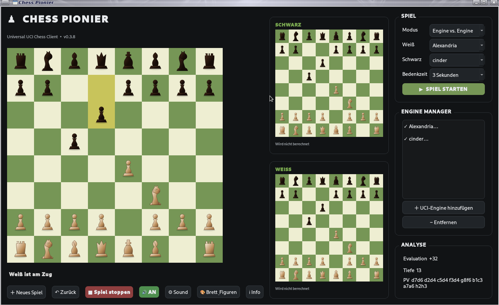

Über Chess Pionier
Chess Pionier ist ein grafischer Universal-UCI-Schachclient für Linux und Windows.
Spiele Mensch gegen Mensch, Mensch gegen Engine oder Engine gegen Engine und verwalte mehrere UCI-Schachengines direkt im Engine Manager.
Funktionen
- ♟️ Mensch gegen Mensch
- 🤖 Mensch gegen Engine
- 🤖 Engine gegen Engine
- Unterstützung für mehrere UCI-Schachengines
- Engine Manager zum Hinzufügen und Entfernen von UCI-Engines
- Anzeige der verwendeten Engine bzw. Spielernamen
- Zwei kleine Engine-Vorschau-Schachbretter
- Schnelle Darstellung der berechneten Varianten Zug für Zug
- Analyseanzeige mit Bewertung, Tiefe und Principal Variation
- Bedenkzeit ab 2 Sekunden
- Schach-, Schachmatt-, Patt- und Remis-Erkennung
- Soundeffekte
- Verschiedene Brett- und Figuren-Sets
Installation & Start
Die folgenden Dateien liegen im Chess-Pionier-Projekt. Linux verwendet Shell-Skripte (.sh), Windows eine Batch-Datei (.bat).
Projekt herunterladen und anschließend die Abhängigkeiten installieren.
Projekt herunterladen und die Startdatei im Projektordner ausführen.
Linux starten
run_linux.sh start_chess_pionier.sh
Linux Desktop-Starter
Damit Chess Pionier im Anwendungsmenü erscheint:
Hinweis: Die Installer-/Startdateien müssen zusammen mit dieser Webseite im GitHub-Projekt vorhanden sein, damit die Download-Buttons funktionieren.
Aktuelle Version
v0.3.12
UCI-Engines
Chess Pionier unterstützt mehrere UCI-Schachengines. Über den Engine Manager können UCI-Engines hinzugefügt und entfernt werden.